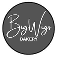
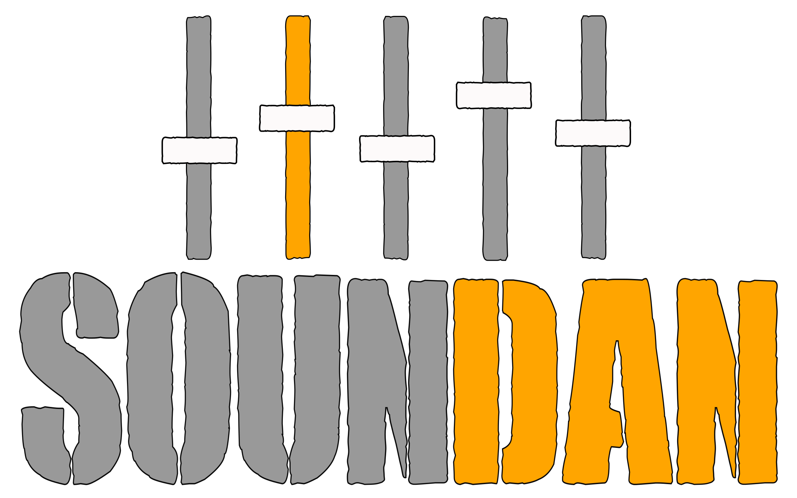
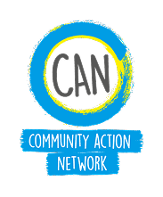

Across the high street
Venues inside and outside, all connected.
Increase the Peace is a community-powered festival across Boscombe High Street, bringing artists, venues and neighbours together to raise funds, grow connection and demonstrate the power of an open heart.
Venues inside and outside, all connected.
Artists, neighbours, volunteers, audiences.
Supporting local charities
Increase The Peace is a 1 day, community-powered festival celebrating creativity, connection and collective action. Across venues inside and outside along Boscombe High Street, artists, musicians, neighbours and local businesses come together to raise money, open doors and grow community.
“Increase the Peace was created to show what’s possible when a community chooses connection. Across Boscombe, we open our doors, our stages and our hearts. By welcoming the stranger and working together, we can grow something powerful, raising vital funds for local charities and proving that kindness is not small. It changes things.”
From Claire, Founder & Creative Director
This year we’re going bigger than ever. More artists. More collaboration. Our charity partners are currently being selected, with all funds raised going directly to causes that strengthen our local community.
Across the high street and beyond, indoors and outdoors.
See our venues +Music, performance, art, and the unexpected. Here are our headline ones..
See our artistsFundraising that stays rooted in the local community.
See our charities
Because community is powerful. Because creativity builds bridges.
Because welcoming the stranger can change everything.
Whether you’re an artist, venue, volunteer or supporter, there’s a place for you.
Venues, local businesses, community groups. Let’s build something brilliant together.
Register interest →Help with stewarding, set-up, welcoming, wayfinding, or crew support.
Join the volunteer list →Share posts, bring a friend, donate on the day, and show up with an open heart.
Make a donation →We couldn’t do this without your support


